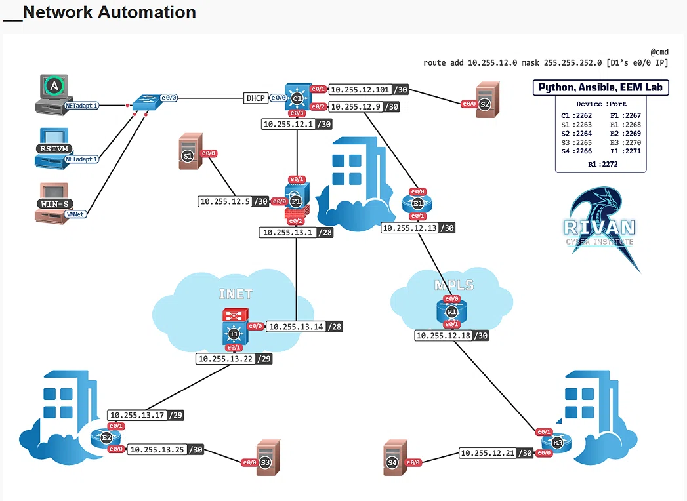
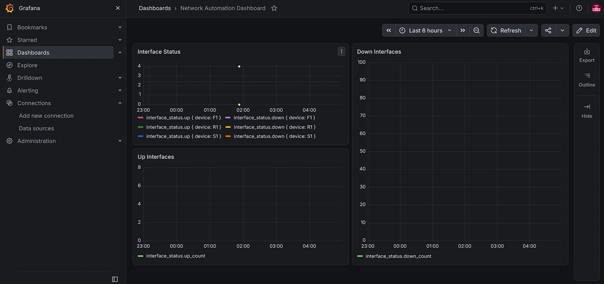
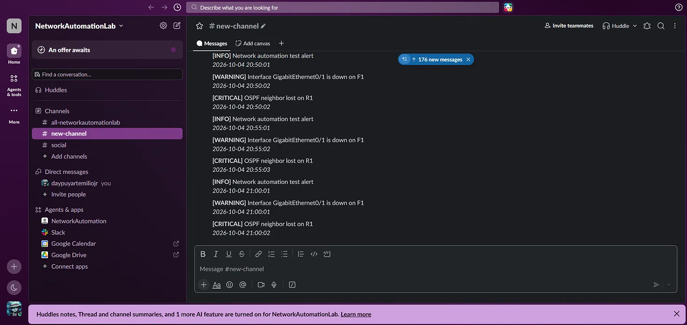

A complete network automation lab with 11 Cisco IOS devices (C1, F1, E1, E2, E3, I1, R1, S1, S2, S3, S4) managed by an Ubuntu Server Control Node. The lab features OSPF routing, MPLS, and SSH automation using Scrapli, Ansible, Nornir, and other industry-standard tools.



https://github.com/daypuyartemiliojr-ux/network-automation-lab